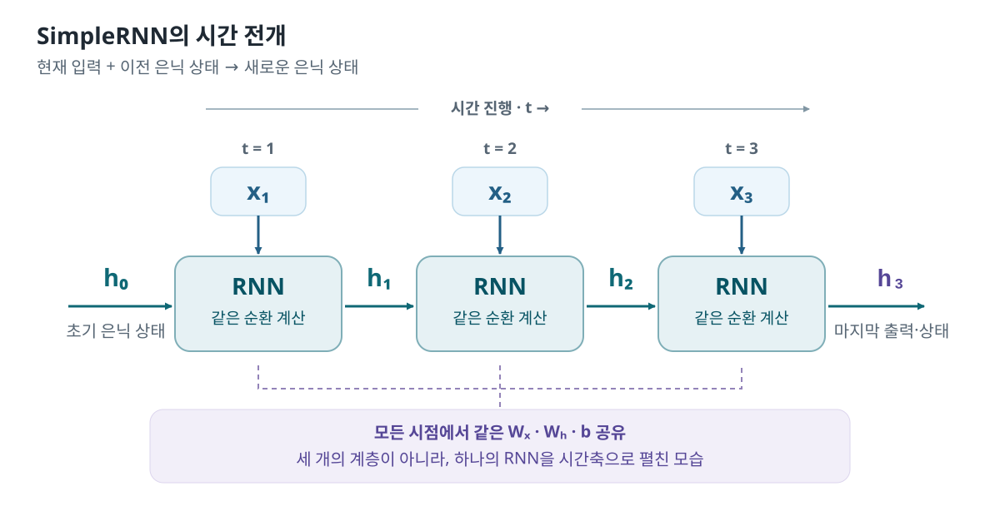

SEQUENCE → RECURRENT LAYER → OUTPUT / STATE
RNN 구조
시퀀스 (B,T,D)가 RNN을 통과할 때,
입력 Feature 차원 D가 Hidden 차원 U로 바뀌는 과정
과
전체 출력·마지막 출력·마지막 상태의 차이
를 코드와 Shape로 확인한다.
원본에는 정답 y, compile(), fit(), evaluate()가 없다.
X_train이라는 이름을 사용하지만 실제로는 입력 Tensor를 만들고
model.summary()와
model(X_train)을 실행한다.
Batch · Time · Feature
마지막 시점의 출력
모든 시점의 출력
근거: 통합교안 p.584~592 · 90_케라스_RNN_기초55.ipynb · 38개 Cell: Markdown 15개, Code 23개 · 저장 출력 36개 · 원본 그림 0개.
수치 표시는 교안의 저장 출력이다. 새 실행의 소수점 값을 보장하는 예측 결과가 아니다. 코드에는 원문 실행문 발췌와 Step 1·2의 보완 코드를 각각 표시한다.
학습 목표
- B·T·D·U와 정수 입력·Vector 입력의 차이를 설명한다.
- Embedding·SimpleRNN·LSTM의 Shape와 Parameter를 계산한다.
- Bidirectional과 Stacked LSTM의 연결 방식을 구분한다.
- 두 반환 옵션의 네 조합과 마지막 h·c를 해석한다.
- 상태 계산과 가중치 학습, 반환과 상태 유지를 구분한다.
- 원문 주석·저장 출력·보완 해석을 구분하고 오류를 진단한다.
01 · 실습 목표
모델 생성 · 순전파 · 학습은 다른 단계다
원본에서 하는 것
작은 입력 배열을 만들고, 모델 Summary와 순전파 반환값의 Shape를 확인한다. 학습 가능한 Parameter는 존재하지만 정답으로 갱신하지 않는다.
원본에서 하지 않는 것
정답 구성, 데이터 분할, Loss·Optimizer 지정, Epoch 반복, 성능 평가, 다음 문자 예측 학습은 수행하지 않는다.
| 단계 | 이번 ML 55 |
|---|---|
| 문제 정의 | 순환 Layer의 입력·출력·상태 구조 확인 |
| Dataset / 전처리 | 준비된 정수 목록·One-Hot을 배열로 구성 |
| Train / Validation / Test | 분리하지 않음 |
| Model | SimpleRNN·LSTM·양방향·적층 모델 생성 |
| compile / fit / evaluate | 호출하지 않음 |
| predict에 해당하는 확인 | .predict()가 아니라 model(X_train) 직접 호출 |
| 결과 | Summary·Tensor·마지막 Hidden/Cell State |
근거: 교안 p.584~592 전체 실행 흐름. “학습하기”라는 제목과 실제 실행을 구분한다.
02 · Notebook 실행 지도
세 실험을 하나의 Training Pipeline으로 섞지 않는다
A. Embedding 확인
정수 8개 → Embedding → (8,4).
B. 모델 구조 비교
네 구조 생성 → summary() → Shape·Parameter.
C. 반환값 실험
별도의 One-Hot 입력 → LSTM(3) → 반환 옵션 비교.
| Cell | 내용 | 확인할 것 |
|---|---|---|
| 1~7 | Import·Embedding·입력 설명 | 정수와 밀집 Vector, 배치축 |
| 8~10 | SimpleRNN·기본 LSTM | 80개 / 5,361개 Parameter |
| 11~14 | Bidirectional·Stacked | 양방향 결합과 시간축 전달 |
| 15~19 | One-Hot·두 옵션 설명 | B=1, T=1, D=4 |
| 20~28 | 두 옵션의 네 가지 조합 | 출력 Rank·반환 Tensor 개수 |
| 29~32 | B=1, T=5 | 전체 출력과 마지막 상태 |
| 33~38 | B=3, T=5 | Sample별 출력·h·c |
근거: 교안 p.584~592 · Cell 1~38.
03 · 핵심 개념 · 그림처럼 이해
현재 입력과 이전 상태가 다음 상태를 만든다

ht = tanh(xtWx + ht−1Wh + b)
원문 SimpleRNN 주석의 입력 가중치·순환 가중치·Bias 계산을 식으로 정리했다. 현재 입력이 같아도 이전 상태가 다르면 출력은 달라질 수 있다.
시퀀스 개수
각 시퀀스 길이
시점별 입력 차원
Hidden 출력 차원
B와 T는 데이터의 묶음·길이, D는 입력 표현, U는 Layer의 Hidden 크기다. 원본 후반부의 B=3과 U=3은 숫자만 같을 뿐 서로 다른 축이다.
근거: p.585~586 · Cell 9. 수식·시간 전개도는 Step 1·2의 보완 정리.
04 · Dataset 구조 · X / y
외부 Dataset이 아니라 직접 준비한 작은 시퀀스다
Embedding 예제의 문장은
“철수는 태권도를 좋아해,하지만 너무 가기 싫어 합니다”이며,
원본은 이미 인코딩된 목록
[2,5,6,9,3,10,11,4]을 사용한다.
Tokenizer를 실제로 실행해 사전을 만드는 단계는
이 Notebook에 없다.
| 변수·단계 | 내용 | Shape |
|---|---|---|
| sentence | Token Index 8개 | (8,) |
| embedding_tensor | Token별 4차원 밀집 Vector | (8,4) |
| 첫 X_train | 문자 h 하나, 시퀀스 1개 | (1,1,4) |
| 두 번째 X_train | h,e,l,l,o | (1,5,4) |
| 마지막 X_train | 길이 5인 시퀀스 3개 | (3,5,4) |
| y_train | 정답을 만들지 않음 | 없음 |
후반부의 h,e,l,o는 앞의 Embedding 결과가 아니다.
또한 문자 변수 h와 수식의 Hidden State
h_t는 다르다.
근거: p.584~585 Cell 5~6, p.589 Cell 16~17, p.591 Cell 30·34.
05 · 개발 환경과 실행 방식
NumPy로 입력을 만들고 Keras로 구조를 확인한다
원문 실행문 · Cell 2
import tensorflow as tf
from tensorflow import keras
import numpy as np- 무엇을 하는가?
- 입력 배열·신경망 Layer·Tensor 확인에 필요한 Library를 불러온다.
- 왜 필요한가?
- np.array(), keras.layers, Sequential을 사용하기 위해서다.
- 입력 Shape
- 아직 입력 데이터가 없다.
- 출력 Shape
- Tensor 출력 단계가 아니다.
- 실행 후 변화
- tf·keras·np 이름을 사용할 수 있다. 모델은 아직 없다.
model.summary()
Layer별 Output Shape와 Parameter를 확인한다. 요약 화면에 Parameter가 표시되어도 학습했다는 뜻은 아니다.
model(X_train)
현재 가중치로 입력을 순전파한다. 원본의 후반 실험에서는 model이라는 이름이 개별 LSTM Layer를 가리킨다.
근거: p.584 Cell 2 및 각 모델 Summary·직접 호출 코드.
06 · Embedding 코드
정수 8개가 4차원 Vector 8개로 바뀐다
원문 실행문 발췌 · Cell 4~6 · 설명 주석 제외
embedding = keras.layers.Embedding(input_dim=100,output_dim=4)
embedding
sentence=[2,5,6,9,3,10,11,4]
embedding_tensor=embedding(np.array(sentence))
embedding_tensor
print(f'{embedding_tensor.numpy()}\n\n{embedding_tensor.numpy().shape}')
생성 직후 저장 화면은 built=False다.
최초 호출에서 Layer가 build되고 결과가 계산된다.
이 과정은 Loss·Optimizer에 의한 학습이 아니다.
저장 출력 · Cell 6
[[ 0.04756296 0.028595 -0.01914374 -0.0099406 ]
[-0.01926534 0.02481034 -0.04951381 0.01591213]
[-0.03518474 0.03532505 0.01335167 0.02033634]
[-0.00620619 0.00195057 0.03872372 -0.00502931]
[ 0.00357541 -0.04139143 0.02762203 0.02701732]
[ 0.0427779 -0.0416911 0.01947056 -0.01814408]
[-0.03187466 -0.03903141 -0.03331807 0.03406725]
[ 0.00640141 -0.00081133 0.00876777 0.02237251]]
(8, 4)- 무엇을 하는가?
- 각 정수 Index에 해당하는 4차원 Vector를 가져온다.
- 왜 필요한가?
- Token의 숫자 크기 대신 밀집 Vector 표현을 사용하기 위해서다.
- 입력 Shape
- (8,) · 정수 Token 8개.
- 출력 Shape
- (8,4) · float32 Tensor.
- 실행 후 변화
- 가중치를 사용할 수 있는 Layer와 순전파 결과가 생긴다. 가중치 학습은 없다.
input_dim=100은 Index 위치 100개, output_dim=4는 Vector 차원이다. 유효 Index는 0~99다. 문장 한 개의 RNN 입력으로 본다면 배치축을 포함한 (1,8,4)가 필요하지만, 이 원본 실험의 직접 출력은 (8,4)다.
근거: p.584~585 · Cell 4~6. 배치축·build 해석은 Step 1·2 보완.
07 · Input Shape 구분
Embedding 유무에 따라 출발 Shape가 다르다
정수 Token에서 시작
Input(shape=(10,))
↓
정수 입력 (B,10)
↓
Embedding
↓
RNN 입력 (B,10,4)이미 Vector가 준비됨
Input(shape=(1,10))
↓
Vector 입력 (B,1,10)
↓
SimpleRNN / LSTM
Input(shape=...)에는
Batch 축을 제외한 한 Sample의 Shape를 넣는다.
Summary의 None은
이 예제에서 고정하지 않은 Batch 크기다.
왼쪽은 Token 10개, 오른쪽은 10차원 Vector가 시점 1개다. 입력 Rank만 고치는 것이 아니라, 데이터가 실제 어떤 시퀀스를 뜻하는지 확인한다.
근거: p.585 · Cell 7·9. Input과 None 해석은 Step 1·2 보완.
08 · Model Architecture · SimpleRNN
입력 10차원 → Hidden 5차원
원문 실행문 발췌 · Cell 9
model = keras.Sequential()
model.add(keras.layers.Input(shape=(1,10)))
model.add(keras.layers.SimpleRNN(units=5))
model.summary()저장 Summary 핵심
simple_rnn (SimpleRNN) Output Shape: (None,5)
Total params: 80
Trainable params: 80
Non-trainable params: 0D×U + U×U + U = 10×5 + 5×5 + 5 = 80
- 무엇을 하는가?
- Feature 10개를 Hidden 5개로 변환하는 순환 구조를 만든다.
- 왜 필요한가?
- 입력 가중치 50개·순환 가중치 25개·Bias 5개의 관계를 확인한다.
- 입력 Shape
- (B,1,10).
- 출력 Shape
- (B,5) · return_sequences 기본값 False.
- 실행 후 변화
- 모델 구조와 80개 Parameter가 준비된다. summary()는 학습이 아니다.
현재는 T=1이므로 긴 순서의 영향보다 구조 확인이 중심이다. 시간에 따른 상태 변화는 T=5 실험에서 확인한다.
근거: p.585~586 · Cell 9.
09 · Model Architecture · LSTM
Embedding → LSTM → Dense를 연결한다
원문 실행문 발췌 · Cell 10
model = keras.Sequential()
model.add(keras.layers.Input(shape=(10,)))
model.add(keras.layers.Embedding(input_dim=1000,output_dim=4))
model.add(keras.layers.LSTM(units=16))
model.add(keras.layers.Dense(units=1))
model.summary()| Layer | Output Shape | Params |
|---|---|---|
| Embedding | (None,10,4) | 4,000 |
| LSTM | (None,16) | 1,344 |
| Dense | (None,1) | 17 |
| Total | 모두 Trainable | 5,361 |
- 무엇을 하는가?
- 정수 시퀀스를 밀집 Vector로 바꾸고 LSTM의 마지막 출력을 Dense에 연결한다.
- 왜 필요한가?
- 정수 입력이 3차원 RNN 입력이 되는 과정을 이해한다.
- 입력 Shape
- (B,10) → 순환층 입력 (B,10,4).
- 출력 Shape
- LSTM (B,16), 최종 Dense (B,1).
- 실행 후 변화
- 5,361개 Parameter의 모델이 만들어진다. 정답 기반 학습은 없다.
Hidden State h_t
현재 시점의 Hidden 표현이며 주 출력으로 사용된다.
Cell State c_t
LSTM 내부의 기억 상태다. 같은 차원이어도 h_t와 다른 값·역할이다.
Dense(1)의 출력은 한 개지만, 정답과 Loss가 없으므로 감성 확률·평점·주가 중 무엇을 예측하는 모델이라고 확정할 수 없다.
근거: p.586~587 · Cell 10. h·c 해석은 p.589 Cell 19 및 Step 1·2.
10 · Bidirectional LSTM
정방향 16D와 역방향 16D를 이어 붙인다
원문 실행문 발췌 · Cell 12
model = keras.Sequential()
model.add(keras.layers.Input(shape=(10,)))
model.add(keras.layers.Embedding(input_dim=1000,output_dim=4))
model.add(keras.layers.Bidirectional(keras.layers.LSTM(units=16)))
model.add(keras.layers.Dense(units=1))
model.summary()정방향
x₁ → x₂ → … → x₁₀
(B,16)역방향
x₁₀ → … → x₂ → x₁
(B,16)기본 concat 결합: (B,16) + (B,16) → (B,32)
Embedding (None,10,4) 4,000
Bidirectional (None,32) 2,688
Dense (None,1) 33
Total params: 6,721- 무엇을 하는가?
- 같은 입력 구간을 두 방향으로 처리한다.
- 왜 필요한가?
- 전체 입력이 주어진 상황의 양쪽 문맥 활용을 이해한다.
- 입력 Shape
- 정수 (B,10), Embedding 후 (B,10,4).
- 출력 Shape
- 양방향 결합 (B,32), Dense (B,1).
- 실행 후 변화
- 두 방향의 순환 Parameter를 갖는 모델이 만들어진다. 성능 우위는 실험하지 않는다.
Step 1·2에서 구분한 기본 결합은 concat이다. 또한 양방향이라고 해서 아직 관측하지 못한 미래를 입력할 수 있는 것은 아니다. 과제의 예측 시점에 사용 가능한 정보만 넣는다.
근거: p.587~588 · Cell 11~12. concat·정보 사용 범위는 Step 1·2 보완.
11 · Stacked LSTM
아래층의 모든 시점 출력이 위층의 시퀀스 입력이 된다
원문 실행문 발췌 · Cell 14
model = keras.Sequential()
model.add(keras.layers.Input(shape=(10,)))
model.add(keras.layers.Embedding(input_dim=1000,output_dim=4))
model.add(keras.layers.LSTM(units=16,return_sequences=True))
model.add(keras.layers.LSTM(units=32))
model.add(keras.layers.Dense(units=1))
model.summary()Embedding (None,10,4) 4,000
LSTM 16 (None,10,16) 1,344
LSTM 32 (None,32) 6,272
Dense (None,1) 33
Total params: 11,649- 무엇을 하는가?
- 서로 다른 두 LSTM Layer를 깊이 방향으로 연결한다.
- 왜 필요한가?
- 위층도 3차원 시퀀스를 받아야 함을 확인한다.
- 입력 Shape
- (B,10), 첫 순환층은 (B,10,4).
- 출력 Shape
- (B,10,16) → (B,32) → (B,1).
- 실행 후 변화
- 첫 Hidden 차원 16이 둘째 Layer의 입력 Feature 차원이 된다.
원문은 이 Many-to-One 예제의 최상단을 False로 설명한다. Step 1·2 보완: 시점별 출력이 필요한 다른 과제에서는 최상단도 True일 수 있다.
근거: p.588~589 · Cell 13~14.
12 · Parameter 계산
시간 길이는 가중치 개수에 직접 곱하지 않는다
Embedding
P = V × D
사전 크기 × 밀집 차원
SimpleRNN
P = D×U + U² + U
입력·순환 가중치 + Bias
LSTM
P = 4(D×U + U² + U)
원본 기본 설정의 네 변환 묶음
원본 LSTM 주석은 Forget·Input·Output 계산을 설명한다. Input 쪽의 후보 계산까지 포함하면 가중치 변환 묶음이 네 개다. Hidden State와 Cell State가 있으므로 단순히 두 배라고 계산하는 것이 아니다.
| 대상 | 계산 | 개수 |
|---|---|---|
| SimpleRNN D=10,U=5 | 10×5 + 5×5 + 5 | 80 |
| Embedding V=1000,D=4 | 1000×4 | 4,000 |
| LSTM D=4,U=16 | 4(4×16 + 16×16 + 16) | 1,344 |
| Bidirectional 순환 부분 | 2×1,344 | 2,688 |
| 둘째 LSTM D=16,U=32 | 4(16×32 + 32×32 + 32) | 6,272 |
| Dense 16→1 / 32→1 | 입력×출력 + Bias | 17 / 33 |
원본 전체 모델 합계: 80 / 5,361 / 6,721 / 11,649. 시점마다 가중치를 공유하지만, 적층의 서로 다른 Layer는 별도 가중치를 갖는다.
근거: p.585~588 · Cell 9~14. 원본 계산을 V·D·U 기호로 재구성.
13 · return_sequences / return_state
시간축 선택과 상태 추가 반환은 다른 질문이다
return_sequences
주 출력에 시간축을 남길 것인가?
False: (B,U)
True: (B,T,U)
return_state
주 출력 외에 마지막 상태도 받을 것인가?
LSTM True: output, h_T, c_T
| sequences | state | 주 출력 | 추가 상태 | Tensor 수 |
|---|---|---|---|---|
| False | False | (B,U) | 없음 | 1 |
| True | False | (B,T,U) | 없음 | 1 |
| False | True | (B,U) | h_T, c_T 각각 (B,U) | 3 |
| True | True | (B,T,U) | h_T, c_T 각각 (B,U) | 3 |
SimpleRNN은 Cell State가 없으므로 return_state=True일 때 주 출력과 마지막 Hidden State, 두 Tensor를 반환한다. 원본의 SimpleRNN 옵션 실험문은 주석 처리되어 있고, 저장된 네 조합 결과는 LSTM 실행 결과다.
return_sequences=False여도 모든 시점을 처리한다. return_state=False여도 내부 상태를 사용한다. return_state=True가 모든 시점의 Cell State를 반환하는 것은 아니다.
근거: p.589~590 · Cell 18~28. 반환·계산 구분은 Step 1·2 보완.
14 · 코드 예제 · B=1, T=1, D=4, U=3
가장 작은 입력으로 네 가지 반환 구조를 확인한다
원문 실행문 발췌 · Cell 16~17
h = [1,0,0,0]
e = [0,1,0,0]
l = [0,0,1,0]
o = [0,0,0,1]
X_train = np.array([[h]],dtype=np.float32)
print(X_train.shape)
X_train(1, 1, 4)
array([[[1., 0., 0., 0.]]], dtype=float32)
h는 (4,),
[h]는 (1,4),
[[h]]는
Batch 축까지 가진 (1,1,4)로 이해한다.
A. False / False · Cell 22
model = keras.layers.LSTM(units=3,return_sequences=False,return_state=False)
output=model(X_train)
print(output)tf.Tensor([[-0.03850183 -0.02139846 0.1649257 ]], shape=(1, 3), dtype=float32)B. True / False · Cell 24
model = keras.layers.LSTM(units=3,return_sequences=True,return_state=False)
output=model(X_train)
print(output)tf.Tensor([[[-0.06488044 0.09665807 -0.0771267 ]]], shape=(1, 1, 3), dtype=float32)C. False / True · Cell 26
model = keras.layers.LSTM(units=3,return_sequences=False,return_state=True)
output=model(X_train)
print(output)저장 결과 · Tensor별 배열과 Shape를 재배치
주 출력 (1,3)
[[ 0.10506574 -0.01410494 -0.08660976]]
마지막 Hidden State (1,3)
[[ 0.10506574 -0.01410494 -0.08660976]]
마지막 Cell State (1,3)
[[ 0.20157848 -0.02556886 -0.22883785]]D. True / True · Cell 28
model = keras.layers.LSTM(units=3,return_sequences= True,return_state=True)
output=model(X_train)
print(output)주 출력 (1,1,3)
[[[-0.04088151 -0.07665027 0.18958078]]]
마지막 Hidden State (1,3)
[[-0.04088151 -0.07665027 0.18958078]]
마지막 Cell State (1,3)
[[-0.10491961 -0.21420364 0.31481853]]- 무엇을 하는가?
- 같은 입력을 네 설정의 LSTM에 각각 전달한다.
- 왜 필요한가?
- 시간축 유지와 추가 상태 반환을 분리해서 확인한다.
- 입력 Shape
- 네 경우 모두 (1,1,4).
- 출력 Shape
- A: (1,3), B: (1,1,3), C·D: 위 주 출력과 마지막 h·c.
- 실행 후 변화
- Cell마다 새 LSTM 객체와 순전파 결과가 생긴다. 학습은 없다.
새 Layer의 초기 가중치가 서로 다를 수 있다. 비교 대상은 소수점 크기보다 Shape·반환 개수다. T=1이어도 (1,3)과 (1,1,3)은 Rank가 다르다.
근거: p.589~590 · Cell 16~28. 모든 숫자는 원본 저장 출력.
15 · 코드 예제 · B=1, T=5
hello의 각 시점이 3차원 Hidden Vector를 만든다
원문 실행문 발췌 · Cell 30~31
X_train = np.array([[[1,0,0,0],e,l,l,o]],dtype=np.float32)
X_train.shape
model = keras.layers.LSTM(units=3,return_sequences=True)
model(X_train)저장 출력 · 배열과 Shape 재배치
입력 Shape: (1,5,4)
출력 Shape: (1,5,3), dtype=float32
[[[-0.03949879 -0.10104878 -0.11092167]
[ 0.09131265 -0.08918598 0.00038316]
[ 0.02582764 -0.10184622 -0.04965472]
[-0.04786283 -0.11886637 -0.0841208 ]
[ 0.09220475 -0.04142691 -0.1988038 ]]]- 무엇을 하는가?
- 길이 5 시퀀스의 모든 시점 출력을 구한다.
- 왜 필요한가?
- 시간축이 여러 개인 경우를 실제 배열로 본다.
- 입력 Shape
- (1,5,4). 첫 Vector [1,0,0,0]은 문자 h다.
- 출력 Shape
- (1,5,3). Batch와 Time은 유지되고 Feature가 Hidden 3차원으로 바뀐다.
- 실행 후 변화
- 현재 가중치로 다섯 시점의 상태가 계산된다. 학습 업데이트는 없다.
세 번째와 네 번째 입력은 같은 One-Hot이지만 이전 상태가 다르다. 그래서 출력도 달라진다. 순서의 영향을 보여 주지만, 언어 의미를 학습했다는 증거는 아니다.
근거: p.591 · Cell 30~31.
16 · 전체 출력과 마지막 상태
전체 출력의 마지막 시점이 마지막 Hidden과 대응한다
원문 실행문 · Cell 32
model = keras.layers.LSTM(units=3,return_sequences=True,return_state=True)
model(X_train)전체 출력 (1,5,3)
[[[ 0.13054018 0.12429557 -0.01435446]
[ 0.15007193 -0.00189508 -0.06098158]
[ 0.16420385 -0.0368287 0.00634574]
[ 0.1834824 -0.05262702 0.05250459]
[ 0.15119004 -0.12607808 -0.02278726]]]
마지막 Hidden State (1,3)
[[ 0.15119004 -0.12607808 -0.02278726]]
마지막 Cell State (1,3)
[[ 0.28773507 -0.27020502 -0.03858607]]- 무엇을 하는가?
- 전체 출력 외에 마지막 h와 c를 반환한다.
- 왜 필요한가?
- 출력 시퀀스와 전달 가능한 마지막 상태를 구분한다.
- 입력 Shape
- (1,5,4).
- 출력 Shape
- (1,5,3), (1,3), (1,3).
- 실행 후 변화
- 새 LSTM의 결과가 세 Tensor로 반환된다. Cell 31의 가중치를 재사용한 것이 아니다.
이 예제: 전체_출력[:, −1, :] = 마지막 Hidden State
전체 출력 자체와 마지막 Hidden은 Shape가 다르다. Cell State는 마지막 Hidden과도 다른 상태다. 이 관계는 이번 원본의 기본 정방향·마스킹 없는 입력 조건에서 확인한다.
근거: p.591 · Cell 32. 저장 출력은 역할별 재배치.
17 · 코드 예제 · B=3, T=5
세 시퀀스는 길이 15짜리 한 시퀀스가 아니다
원문 실행문 발췌 · Cell 34~38
X_train = np.array([[h,e,l,l,o],[o,l,l,e,h],[l,l,o,e,h]],dtype=np.float32)
X_train.shape
output,last_hidden_state,last_cell_state=model(X_train)
output
last_hidden_state
last_cell_state
Cell 32에서 만든 같은 LSTM을 사용한다.
세 Sample은 각각
h e l l o,
o l l e h,
l l o e h다.
Cell 36 저장 출력 · 전체 배열
output: (3,5,3), dtype=float32
[[[ 0.13054019 0.12429556 -0.01435446]
[ 0.15007195 -0.00189509 -0.06098156]
[ 0.16420385 -0.03682871 0.00634575]
[ 0.1834824 -0.05262702 0.05250459]
[ 0.15119001 -0.12607808 -0.02278725]]
[[-0.0187963 -0.09570913 -0.0944868 ]
[ 0.02421064 -0.09470136 0.00065678]
[ 0.06884853 -0.09654004 0.04976235]
[ 0.11487514 -0.1591501 -0.01471816]
[ 0.21568444 0.01335222 -0.02021828]]
[[ 0.05322355 -0.03890142 0.04723403]
[ 0.09983911 -0.0558183 0.07757942]
[ 0.07729992 -0.1308492 -0.00109914]
[ 0.10432132 -0.1694036 -0.05086939]
[ 0.20109396 0.00160733 -0.05084984]]]Cell 37~38 저장 출력
last_hidden_state: (3,3), dtype=float32
[[ 0.15119001 -0.12607808 -0.02278725]
[ 0.21568444 0.01335222 -0.02021828]
[ 0.20109396 0.00160733 -0.05084984]]
last_cell_state: (3,3), dtype=float32
[[ 0.28773507 -0.27020502 -0.03858606]
[ 0.4252926 0.02470586 -0.04842375]
[ 0.39243472 0.00297484 -0.12134603]]- 무엇을 하는가?
- 길이 5인 시퀀스 세 개의 출력·마지막 상태를 구한다.
- 왜 필요한가?
- Sample 축과 Time 축을 구분한다.
- 입력 Shape
- (3,5,4).
- 출력 Shape
- 전체 (3,5,3), 마지막 h와 c는 각각 (3,3).
- 실행 후 변화
- 같은 Layer가 세 Sample을 처리한다. 새로운 모델 생성이나 가중치 학습은 없다.
근거: p.591~592 · Cell 33~38.
18 · 출력 Tensor 인덱싱
output[-1]은 마지막 시점이 아니라 마지막 Sample이다
| 식 | 뜻 | Shape |
|---|---|---|
output[0] |
첫 Sample의 전체 출력 | (5,3) |
output[-1] |
마지막 Sample의 전체 출력 | (5,3) |
output[:, -1, :] |
모든 Sample의 마지막 시점 | (3,3) |
output[0, -1, :] |
첫 Sample의 마지막 시점 | (3,) |
last_hidden_state[0] |
첫 Sample의 마지막 Hidden | (3,) |
현재 B와 U가 모두 3이지만 역할은 다르다. 축의 크기를 외우기 전에 Batch → Time → Feature/Hidden의 순서를 읽는다.
Step 1·2 보완 인덱싱 해설. 기준 데이터: p.592 Cell 36~38.
19 · 상태 갱신과 가중치 학습
상태가 바뀌었다고 학습이 일어난 것은 아니다
이번에 수행한 순전파
x₁ → h₁,c₁
x₂ → h₂,c₂
x₃ → h₃,c₃
현재 입력과 이전 상태로 새 상태를 계산한다.
이번에 수행하지 않은 학습
예측 → 정답 비교 → Loss → Gradient → Optimizer → Weight 갱신
학습 가능한 Layer를 만들었다는 사실과 구분한다.
원본 Cell 22 주석의 이 표현은 Hidden 계산으로 읽는다. 앞 Embedding Table이 정답 기반 학습으로 업데이트되었다는 뜻은 아니다.
return_state는 상태를 외부로 반환하는 옵션이다. 다음 호출까지 상태를 자동 유지하는 설정이 아니다. 호출 간 연결은 stateful·initial_state를 별도로 보아야 한다. 원본 기본 실행에서 Batch 안의 문장들이 하나의 긴 상태 흐름으로 이어지는 것은 아니다.
원문 대조: p.590 Cell 22. 상태 유지 구분은 Step 1·2 보완 내용.
20 · 난수와 Notebook 실행 순서
같은 변수명이 항상 같은 모델을 뜻하지 않는다
원본은 model을 Sequential 모델들에서 개별 LSTM Layer로 계속 재할당한다. Cell 35의 세 반환값 대입이 기대하는 객체는 Cell 32의 LSTM이다.
Cell 9~14: Sequential 모델들을 생성하고 summary()
↓ model을 다시 대입
Cell 22 / 24 / 26 / 28: 반환 설정별 새 LSTM
↓ model을 다시 대입
Cell 31: LSTM(3, return_sequences=True)
↓ model을 다시 대입
Cell 32: LSTM(3, return_sequences=True, return_state=True)
↓ 같은 객체 사용
Cell 35: output, last_hidden_state, last_cell_state = model(X_train)원본은 Seed 고정 코드를 넣지 않는다. 새로운 Layer를 만들거나 실행 환경이 달라지면 저장 소수점과 다른 값이 나올 수 있다. 숫자의 일치보다 Shape와 반환 관계를 확인한다.
근거: p.585~592 모델 재할당 코드. 재현성 해석은 Step 1·2 보완.
21 · Loss·Optimizer·Metric 해석
Hidden 값은 정확도나 정답 확률이 아니다
| 질문 | 원본에서 확인되는 내용 |
|---|---|
| Loss / Optimizer / Learning Rate | 지정하지 않음 |
| Epoch / fit | 학습 반복 없음 |
| 정답 y / 데이터 분할 | 구성하지 않음 |
| Accuracy / MAE / MSE / R² | 계산하지 않음 |
| 평가 대상 | 출력 Shape·반환 개수·상태 관계 |
0.15119001은 Hidden Vector의 한 성분이다.
정확도 15.1%, 긍정 확률, 평점, 다음 문자 정답으로 읽지 않는다.
units=3도 Class가 세 개라는 뜻이 아니다.
근거: p.584~592 실행 코드 전체 및 p.592 저장 Hidden State.
22 · 새로운 데이터 · 보완 코드
새 문자 순서로 Shape와 마지막 Hidden 관계를 검증한다
Step 1·2 보완 코드 · 원문에 추가하는 확인 예제
원본 Cell 38까지 순서대로 실행한 뒤 사용한다.
model은 Cell 32에서 생성한
LSTM(3, return_sequences=True, return_state=True)
여야 한다.
X_new = np.array([[h, e, l, o, l]], dtype=np.float32)
new_output, new_hidden, new_cell = model(X_new)
print("입력:", X_new.shape)
print("전체 출력:", new_output.shape)
print("마지막 Hidden:", new_hidden.shape)
print("마지막 Cell:", new_cell.shape)
np.testing.assert_allclose(
new_output.numpy()[:, -1, :],
new_hidden.numpy(),
rtol=1e-5,
atol=1e-6,
)예상 Shape — 원본 저장 출력이 아닌 구조상 기대값
입력 (1,5,4)
전체 출력 (1,5,3)
마지막 Hidden (1,3)
마지막 Cell (1,3)- 무엇을 하는가?
- 새 시퀀스로 동일 Layer의 반환 관계를 검사한다.
- 왜 필요한가?
- 소수점 재현이 아니라 구조적 관계를 자동 확인하기 위해서다.
- 입력 Shape
- (1,5,4) · 원본과 동일한 One-Hot 표현.
- 출력 Shape
- (1,5,3), (1,3), (1,3).
- 실행 후 변화
- 새 순전파 결과가 생성된다. 이 코드도 모델을 학습시키지 않는다.
Step 1·2 보완 검증 코드. 기본 정방향·마스킹 없는 원본 실험 조건을 전제로 한다.
23 · 자주 하는 실수 · 원문 대조
공식 검토 메모와 추가 해석을 섞지 않는다
이번 90번 장 시작부에는 별도의 공식 검토 메모가 없다. 아래는 Step 1·2에서 구분한 원문 설명과 보완 해석이다.
| 원문 표현·위치 | Step 1·2 원문 대조·보완 |
|---|---|
| Cell 1·14의 return_sequence |
실행 코드의 실제 인수명은
return_sequences다.
|
| Cell 15 “시퀀스 데이타로 학습하기” | 실제는 y·fit 없는 순전파 실험이다. |
| 후반 주석 “임베딩 벡터 차원 4” | 실제 입력은 직접 만든 One-Hot이다. 일반적으로 입력 Feature 차원 D로 읽는다. |
| Cell 22 “업데이트 된 임베딩 벡터” | Hidden 계산과 Embedding 가중치 학습을 구분한다. |
| Cell 14 “최상단은 False” | 이번 Many-to-One 구조의 선택이다. 시점별 출력 과제는 다를 수 있다. |
| Cell 28 “동일한 벡터” 주석 | 전체 출력 자체가 아니라 마지막 시점 출력이 마지막 Hidden에 대응한다. |
| Cell 12 역방향 16이 “더해져” 32 | 기본 결합은 원소별 합이 아니라 concat이다. |
| Cell 7의 FFNN/CNN 2차원 입력 설명 | Flatten 후 Dense와 기본 Conv2D 입력을 구분한다. Conv2D의 기본 channels_last 입력은 (B,H,W,C)다. |
| Cell 22 주석 [0.6248919, 0.6587242, 0.09015404] | 실제 저장 출력은 [-0.03850183, -0.02139846, 0.1649257]이다. |
원문 근거: p.584 Cell 1, p.585 Cell 7, p.587~588 Cell 12·14, p.589~590 Cell 15·22·28. 오른쪽은 앞 단계의 보완 해석이며 공식 검토 메모가 아니다.
24 · 오류 메시지 읽기
Rank → 축의 의미 → 크기 → dtype → 반환 구조 순서로 본다
원문 Cell 9에 기록된 오류 주석
ValueError: ...expected ndim=3, found ndim=2.
Full shape received: (None, 10)expected ndim=3은 기대 Rank, found ndim=2는 실제 Rank다. Input(shape=(10,))을 Embedding 없이 SimpleRNN에 직접 연결한 상황과 관련된다. 그 Input 자체가 언제나 잘못된 것은 아니다.
| 오류·증상 | 점검 |
|---|---|
| return_sequence 인수 인식 실패 | 끝의 s를 포함한 return_sequences인지 확인 |
| Embedding Index 범위 오류 | 정수 Index가 0 이상, input_dim 미만인지 확인 |
| Stacked LSTM 연결 오류 | 아래층이 3차원 시퀀스를 반환하는지 확인 |
| 입력 차원 불일치 | Batch·Time 축과 마지막 Feature 차원 확인 |
| AttributeError: shape 없음 | Tensor가 아니라 tuple/list에 .shape를 찾는지 확인 |
| 반환값 개수 오류 | 현재 model의 종류와 return_state 설정 확인 |
| 문자열·수치 변환 오류 | 정수 ID와 실수 Feature 입력을 구분 |
| 값은 나오지만 의미가 이상함 | 모델 재할당·축 해석·One-Hot/Embedding 혼용 확인 |
반환 구조를 먼저 출력하는 보완 코드
result = model(X_train)
print("반환 자료형:", type(result))
if isinstance(result, (tuple, list)):
print("반환 개수:", len(result))
print("각 Shape:", [tuple(t.shape) for t in result])
else:
print("Tensor Shape:", tuple(result.shape))return_state=False인 Tensor를 세 변수에 풀면, Batch 크기가 우연히 3일 때 Batch 축을 나누는 동작이 될 수도 있다. 자료형·반환 개수·Shape를 함께 확인한다.
직접 오류 근거: p.585 Cell 9. 나머지 표·진단 코드는 Step 1·2 보완.
25 · 필수 진단 항목
구조 검증과 성능 검증을 분리한다
| 항목 | 이번 단원에서의 확인 |
|---|---|
| Data Leakage | 성능 평가 Pipeline이 없다. 현재 출력으로 일반화를 검증한 것이 아니다. 실제 미래 예측에서는 예측 시점에 알 수 없는 입력을 포함하지 않는다. |
| Shape Error | (T,D)에 Batch 축이 빠졌는지, Stacked 연결에 Time 축이 남는지 확인한다. |
| Dimension Error | Rank가 같아도 (B,T,4)와 (B,T,5)는 Feature 차원이 다르다. B·T·D·U를 구분한다. |
| dtype Error | Embedding 입력은 유효한 정수 Index, 원본 One-Hot 입력은 float32다. 자동 형변환 가능성과 무관하게 ID의 정수성을 검사한다. |
| Overfitting | Train/Validation 성능이 없어 판단할 수 없다. |
| Underfitting | 정답 대비 성능 측정이 없다. Hidden 값이 작다는 이유로 과소적합이라 하지 않는다. |
| Learning Rate | Optimizer·학습률을 지정하지 않았다. 출력 차이를 학습률 문제로 해석하지 않는다. |
| Loss 해석 | Loss를 계산하지 않았다. 상태 변화는 Loss 감소가 아니다. |
| Accuracy / R² | 계산하지 않았다. units=3, Dense(1)만으로 문제·Metric이 정해지지 않는다. |
원본 실행 범위에 대한 Step 1·2 진단 정리. 미래 정보 사용과 dtype 주의는 보완 설명.
26 · 실무 연결 · 성능 개선의 전 단계
먼저 맞는 Tensor를 연결하고, 이후 정답과 평가를 붙인다
| 필요한 결과 | 구조 | 연결 예 |
|---|---|---|
| 시퀀스 전체의 출력 하나 | 마지막 출력 (B,U) | 문장 감성 분류, 구간 회귀 |
| 시점별 표현 | 전체 출력 (B,T,U) | 시점별 처리, 위층 RNN 입력 |
| 다른 순환 모델에 상태 전달 | return_state=True | Encoder → Decoder |
| 전체 입력의 양쪽 문맥 | Bidirectional | 입력 전체가 주어진 문장 처리 |
| 깊이 방향 순환 표현 | Stacked LSTM | 여러 순환층 연결 |
Encoder의 마지막 h·c를 Decoder 초기 상태로 전달할 때는 Decoder가 기대하는 상태 차원과 맞아야 한다. 이번 원본은 상태 반환·확인까지만 수행한다.
양방향·적층 모델이 만들어졌다는 것과 해당 과제에서 더 좋은 성능을 보였다는 것은 다르다. 이번 Notebook에는 모델 간 성능 비교 결과가 없다.
원문 연결: p.590 Many-to-One·Stacked·Seq2Seq 설명. 실무 적용과 검증 순서는 Step 1·2 보완.
27 · 면접 포인트
Shape와 상태를 문장으로 설명해 보기
Q1. 이번 Notebook은 실제 학습을 수행하는가?
아니다. 모델 생성·Summary·순전파를 수행하며 y·compile·fit은 없다.
Q2. (3,5,4)는 무엇인가?
시퀀스 3개, 각 길이 5, 시점별 입력 Feature 4개다.
Q3. D와 units는 어떻게 다른가?
D는 입력 Feature 차원, units는 Hidden 차원이다. 원본 후반은 D=4, U=3이다.
Q4. 정수 입력과 Vector 입력의 출발 Shape는?
정수 Token은 (B,T)에서 Embedding을 거쳐 (B,T,D)가 되고, Vector 입력은 (B,T,D)에서 출발한다.
Q5. return_sequences=False는 마지막 Token만 처리하는가?
아니다. 전체를 처리한 뒤 마지막 출력만 반환한다.
Q6. LSTM에서 return_state=True이면 몇 Tensor인가?
주 출력, 마지막 Hidden, 마지막 Cell의 세 Tensor다.
Q7. SimpleRNN도 Cell State가 있는가?
없다. 상태 반환 시 주 출력과 마지막 Hidden 두 개를 반환한다.
Q8. 전체 출력에서 마지막 Hidden을 어떻게 고르는가?
이번 기본 정방향·마스킹 없는 예제에서는 output[:, -1, :]다.
Q9. 아래층 LSTM에 return_sequences=True가 필요한 이유는?
다음 LSTM에 3차원 시퀀스 입력을 직접 전달해야 하기 때문이다.
Q10. 최상단은 항상 False인가?
아니다. 시퀀스 전체 출력 하나가 필요한지 시점별 출력이 필요한지에 따라 달라진다.
Q11. 양방향 LSTM(16)의 출력이 32인 이유는?
기본 concat에서 정방향 16과 역방향 16을 이어 붙인다.
Q12. 같은 l인데 출력이 다른 이유는?
이전 상태가 다르기 때문이다. 순서의 영향이지 학습 성능 증거는 아니다.
Q13. 상태 갱신은 가중치 학습인가?
아니다. 순전파 상태 계산과 정답·Loss를 통한 Weight 갱신은 다르다.
Q14. return_state=True는 다음 호출까지 기억하는가?
자동 상태 유지와는 다른 옵션이다. stateful·initial_state를 별도로 확인한다.
Q15. 왜 다른 Cell의 소수점이 다를 수 있는가?
새 Layer의 초기 가중치가 다를 수 있다. 저장값 자체보다 Shape와 반환 관계를 비교한다.
Q16. 시퀀스 길이만큼 Parameter를 곱하는가?
아니다. 시점 간 가중치를 공유한다. 적층의 다른 Layer는 별도 가중치를 갖는다.
Q17. output[-1]은 무엇인가?
output이 (B,T,U)인 현재 실험에서는 마지막 Sample의 모든 시점 출력이다.
Q18. 이번 Metric과 다음 단원은?
성능 Metric은 없다. 다음 ML 56에서는 실제 문장을 정수 시퀀스·패딩 입력으로 만든다.
28 · Step 1·2 최종 점검
15개 질문으로 학습 범위를 복원한다
| 질문 | 이번 ML 55 |
|---|---|
| 1. 목표 | RNN 구조와 출력·상태 반환 이해 |
| 2. Dataset | 준비된 정수 목록과 문자 One-Hot |
| 3. X / y | 시퀀스 입력 X만 있으며 y는 없음 |
| 4. Shape | (1,1,4), (1,5,4), (3,5,4) |
| 5. Library | TensorFlow·Keras·NumPy |
| 6. 전처리 | 배열 구성·float32 지정. 실제 Tokenizer·패딩은 없음 |
| 7. Model | SimpleRNN·LSTM·Bidirectional·Stacked |
| 8. 입력 / 출력 | (B,T,D) → (B,U) 또는 (B,T,U), 선택적으로 마지막 상태 |
| 9. Loss | 지정하지 않음 |
| 10. Optimizer | 지정하지 않음 |
| 11. 학습 | 수행하지 않음. summary()와 직접 호출 |
| 12. 결과 | Parameter·Output Shape·마지막 h/c |
| 13. Metric | 성능 지표 대신 구조적 관계 확인 |
| 14. 새 입력 | 동일 Feature 표현의 시퀀스를 Layer에 직접 전달 |
| 15. 다음 | ML 56 자연어 처리 전처리 |